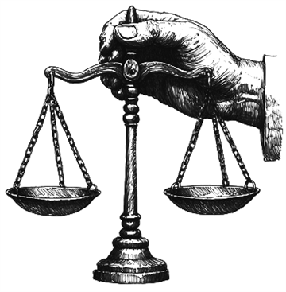

(injustice)
RESSENTIMENT
"Quand la justice n'est pas juste l'injustice est exacte." Pierre DAC
Le ressentiment est traditionnellement considéré comme un sentiment négatif et limitant, qui naît de la réaction que l’on éprouve lorsqu’on fait l’expérience de sa propre faiblesse et lorsqu’on se trouve dans l’incapacité de remédier à ce sentiment d’impuissance. Le ressentiment ne peut pas être assimilé à l’envie. Celle-ci se définit comme la tendance à percevoir avec douleur le bien qui arrive aux autres, même si ce bien ne modifie pas notre propre situation. L’envie naît ainsi du déplaisir éprouvé à la vue du bonheur des autres auxquels on se compare. Ce ressenti peut être vécu comme une amertume et une animosité contenue, ne serait-ce déjà qu'à cause du fait que le sujet ne peut souvent ni riposter, ni même, parfois, simplement exprimer sa colère. Le sujet, alors, perçoit un sentiment d'injustice.
Cet injustice indique que les choses, les événements perçus ne sont pas équilibrés, que l'on donne plus que l'on reçoit, que les faits ne sont pas considérés à leurs justes valeurs. C'est donc un écart, un delta entre un idéal et une réalité. Et pourtant, ce sentiment structure la vision du monde. D'ailleurs, nous ne disons pas "je suis victime" mais "ce n'est pas juste", ce qui permet de se maintenir en estime stable dans un contexte où quelque chose a été retiré, une reconnaissance, une possibilité. L'injustice devient ainsi un point central d'interprétation qui vient modeler notre rapport à soi. Nous considérons les évènements, les éléments qui auraient dû être et non ce qu'ils sont vraiment. Cet écart devient source d'explication, de théorie afin de se maintenir dans un équilibre psychique de compréhension. On cherche alors à rationaliser un déséquilibre mais d'expliquer ne change en rien le ressenti. Et quand il y a correction de l'écart, du déséquilibre, cela vient de l'extérieur, d'un tiers, non de nous.
Pour Friedrich NIETZSCHE, l'injustice évoque une affirmation silencieuse : "je mérite quelque chose." Il exprime la morale du ressentiment qu'il définit comme étant les vertus que nous affichons et qui ont en réalité leur origine dans l’envie et la revanche inassouvie, une forme de rancune mêlée d'hostilité envers ce qui est identifié comme la cause d'un tort subi ou d'une frustration. C'est un sentiment de faiblesse ou d'infériorité ou d'envie face à une cause conduit à la rejeter ou à l'attaquer.
Ce sentiment de limite conduit à une réinterprétation de la réalité pour affirmer qu'on se position dans le juste (morale) mais cette position ne reste que subjective car le monde ne fonctionne pas autour du mérite et de la récompense.
Cet injustice indique que les choses, les événements perçus ne sont pas équilibrés, que l'on donne plus que l'on reçoit, que les faits ne sont pas considérés à leurs justes valeurs. C'est donc un écart, un delta entre un idéal et une réalité. Et pourtant, ce sentiment structure la vision du monde. D'ailleurs, nous ne disons pas "je suis victime" mais "ce n'est pas juste", ce qui permet de se maintenir en estime stable dans un contexte où quelque chose a été retiré, une reconnaissance, une possibilité. L'injustice devient ainsi un point central d'interprétation qui vient modeler notre rapport à soi. Nous considérons les évènements, les éléments qui auraient dû être et non ce qu'ils sont vraiment. Cet écart devient source d'explication, de théorie afin de se maintenir dans un équilibre psychique de compréhension. On cherche alors à rationaliser un déséquilibre mais d'expliquer ne change en rien le ressenti. Et quand il y a correction de l'écart, du déséquilibre, cela vient de l'extérieur, d'un tiers, non de nous.
Pour Friedrich NIETZSCHE, l'injustice évoque une affirmation silencieuse : "je mérite quelque chose." Il exprime la morale du ressentiment qu'il définit comme étant les vertus que nous affichons et qui ont en réalité leur origine dans l’envie et la revanche inassouvie, une forme de rancune mêlée d'hostilité envers ce qui est identifié comme la cause d'un tort subi ou d'une frustration. C'est un sentiment de faiblesse ou d'infériorité ou d'envie face à une cause conduit à la rejeter ou à l'attaquer.
Ce sentiment de limite conduit à une réinterprétation de la réalité pour affirmer qu'on se position dans le juste (morale) mais cette position ne reste que subjective car le monde ne fonctionne pas autour du mérite et de la récompense.

Le sentiment d'injustice peut favoriser un vrai questionnement, pas le manque, pas l'écart, pas le déséquilibre mais ce qui m'intéresse de ne pas voir. En se plaçant du coté de ce qui aurait dû être, on devient le point de référence de l'équilibre manquant et cette position est confortable car elle ne demande qu'une constatation, se transforme en analyse, en théorie, ce qui va influencer la compréhension (biais cognitifs). Et ce rendu biaisé va demander une réparation, une compensation, un besoin de rééquilibrer l'écart entre l'idéal et la réalité. On ne transforme pas, on corrige, ce qui génère une inertie, une absence de mouvement. C'est une stagnation.
Cette centralité qu'est le ressentiment, vient coloriser toutes les nouvelles expériences, biaisant par son influence toutes les compréhensions futures. Cela peut même devenir un filtre stable qui va générer un handicap. Si nous anticipons l'injustice, cela nous met en réserve de nos propres ressources, en méfiance et en vigilance donc en limite auto imposé. On génère ce que l'on appréhende en construisant une perception d'un réalité limitée que l'on vient ensuite dénoncer, réduisant ainsi les chances d'obtenir ce qu'on désire.
Pour NIETZSCHE, notre erreur est d'attendre (inertie) une réponse du monde en proportion à ce que l'on offre. Lorsque l'injustice cesse d'être le point central d'une compréhension, l'acte devient récompense et non plus compensation. Accepter l'asymétrie devient satisfaction, l'asymétrie n'étant pas un déséquilibre, bien au contraire, c'est un équilibre désaxé.
Cette centralité qu'est le ressentiment, vient coloriser toutes les nouvelles expériences, biaisant par son influence toutes les compréhensions futures. Cela peut même devenir un filtre stable qui va générer un handicap. Si nous anticipons l'injustice, cela nous met en réserve de nos propres ressources, en méfiance et en vigilance donc en limite auto imposé. On génère ce que l'on appréhende en construisant une perception d'un réalité limitée que l'on vient ensuite dénoncer, réduisant ainsi les chances d'obtenir ce qu'on désire.
Pour NIETZSCHE, notre erreur est d'attendre (inertie) une réponse du monde en proportion à ce que l'on offre. Lorsque l'injustice cesse d'être le point central d'une compréhension, l'acte devient récompense et non plus compensation. Accepter l'asymétrie devient satisfaction, l'asymétrie n'étant pas un déséquilibre, bien au contraire, c'est un équilibre désaxé.
EN RELATION


DOUBLE CONTRAINTE
TRAHISON
REPARATION
LEGITIMITE
FRUSTRATION
IDEAL